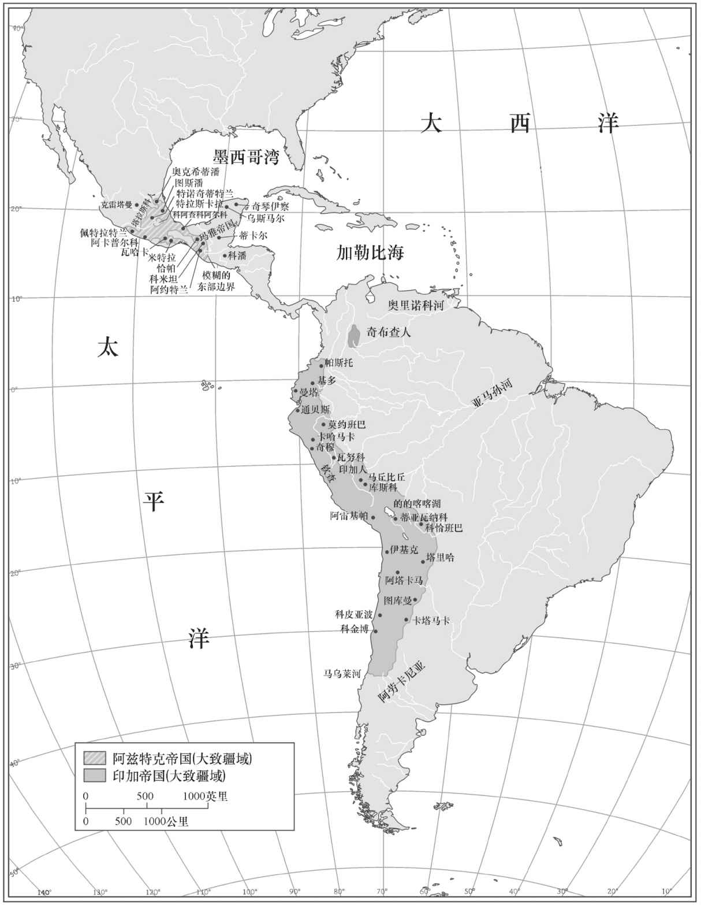
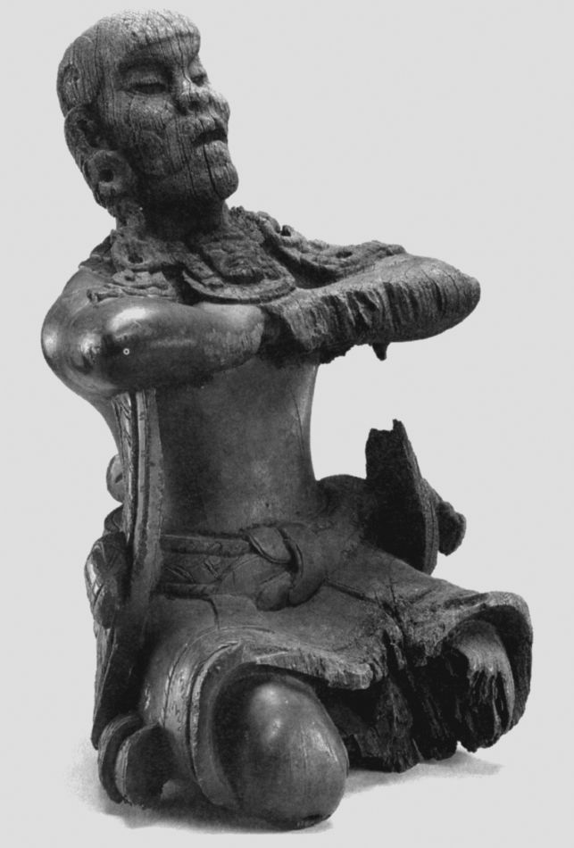
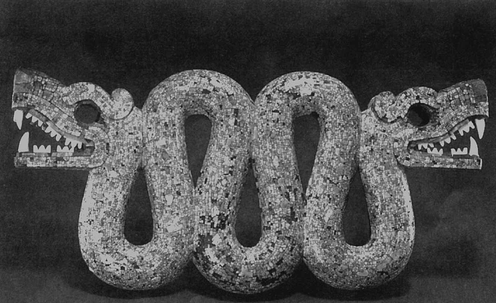
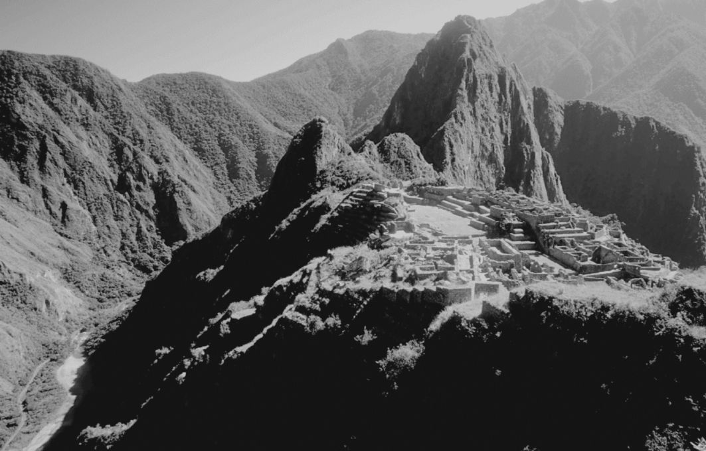

美洲印第安人的三大文明是：位于今尤卡坦、危地马拉和伯利兹的玛雅文明，位于今墨西哥地区的阿兹特克文明和从厄瓜多尔中部到智利中部、延伸2500英里的印加文明（见地图17）。玛雅人创造了美洲最古老的文明，并以其艺术和科学的惊人发展而闻名于世。他们独自发展了表意文字，用字母或记号作为表达思想的传统符号。为了计算时间、预言未来和为献祭及主要的丧葬事宜推算吉日，他们还研究了天体的运动。由经过专门训练的祭司搜集的天文学知识非常广泛，据认为，至少与当时欧洲的天文学知识不相上下。玛雅人的复杂的圣历以共同周期为基础；这种周期在其倍数与时间相一致时便并入更大的周期。他们的有些历法计算跨越几百万年——这是一种给人印象尤为深刻的时间范围方面的观念，反观欧洲，直到非常晚近的时候，创世日还被确定在公元前4004年。

地图17 西班牙征服前夕的美洲印第安人帝国
玛雅人的城市——如果它们可以这样称呼的话——是举行仪式的中心，而不是要塞、居住地或行政首都。之所以如此，是因为玛雅人从事的是刀耕火种的农业；这种农业在两三年内便耗尽了土壤的肥力，因此，他们需要不断地迁移村庄驻地。为了补偿这种短暂的生活方式，玛雅的耕种者们在主要是举行宗教仪式的中心建立了一些巨大的石头建筑物，以此来表示他们的社会统一。这些建筑物是巨大的金字塔庙宇和公共住宅，祭司和新信徒可能就住在这里。这种建筑物完全靠石制工具建成，用雕塑加以装饰；这些雕塑在美洲是无与伦比的，现被列为世界伟大的艺术之一。

图116 一尊玛雅人塑像，它表现的是一位显贵或一位祭司。
4世纪至10世纪期间，玛雅文明非常繁荣，但随后便衰落下去，其原因尚不清楚。可能是由于土壤的肥力耗尽，或疫病流行，也可能是由于反对供养宗教中心及其祭司集团这一负担的农民革命。总之，这些巨大的石头建筑物被废弃，被周围的森林所吞没，近几十年才被考古人员发掘出来。
同爱好艺术、富有知识的玛雅人相比，阿兹特克人显得粗野好战；这一对比使人联想起东半球的罗马人与希腊人之间的悬殊。实际上，阿兹特克人是后来才进入墨西哥的。几个世纪内，这里相继形成了一系列非常发达的社会。这些社会很容易遭到来自干旱的北方的蛮族的攻击；自然，这些蛮族是被肥沃的土地所吸引而迁移南下的。最后一批入侵者就是阿兹特克人。他们在特斯科科湖的一些岛屿上定居下来，然后，占据了阿纳瓦克谷地的大部分地区。随着人口的增长，岛屿变得非常拥挤，阿兹特克人通过建造“浮动园地”来扩大耕地面积。“浮动园地”是一些在湖底丛生的杂草上面铺垫上湖土、由生长的杂草固定在湖底的浮岛，直到今天，某些地区仍使用这种耕作方法。每次播种之前，农民们都要挖些新的湖土，铺在“浮动园地”上，因此，其表面随着一次次耕种而不断增高。然后，农民们再挖去表层的泥土，用于建造新的“浮动园地”，于是开始了一个新的循环。
“浮动园地”使阿兹特克人的人口和财富剧增。15世纪早期，阿兹特克人与特斯科科湖沿岸诸城镇结成联盟，并从他们的立足点迅速地向四面八方扩大自己的影响。他们经常对外远征袭击，迫使其他民族以实物向他们进贡和为他们服劳役。在西班牙人到达之前，阿兹特克人的统治西至太平洋，东达墨西哥湾，南几乎到达尤卡坦半岛，北抵格兰德河。首都特诺奇蒂特兰这时已成为拥有20万到30万人口的大城市，通过几条道路与海岸相连。西班牙征服者科尔特斯将这个首都同威尼斯相比，认为它是“世界上最美丽的城市”。
阿兹特克人的力量建立在持久备战的基础上。所有男人都要携带武器；国家军火库始终备有武器，供需要时使用。凭借有效的军事机器，阿兹特克人从其臣民那里榨取到数量惊人的贡物。据他们自己的记载，除其他各种物品如军服、盾牌和宝石之外，他们一年还征集到玉米1400万磅、豆类和苋菜各800万磅、棉外套200万件。
首都的壮丽和源源涌入首都的大量贡物，自然使西班牙人断定，阿兹特克人的首领蒙提祖马是一个庞大帝国的统治者。其实并非如此。诸附庸国仍相当独立，实行完全的自治。它们同特诺奇蒂特兰的唯一联系就是纳贡；它们之所以纳贡，是因为害怕阿兹特克人的远征。除秘鲁印加人的国家外，没有一个美洲印第安人的国家组织得比城邦更大。阿兹特克人与印加人不同，并不试图使其臣民适应阿兹特克人的生活方式，以免所有人都享有公民权。

图117 属于阿兹特克文化的镶嵌绿松石的双头大蟒蛇。
西班牙人不仅为阿兹特克国家的富有和豪华而眼花缭乱，而且也为其宗教仪式上大肆屠杀一排排献祭用的人而毛骨悚然。这些献祭用的人是在到处可见的、用于宗教仪式的金字塔的顶端遭到屠杀，因此，西班牙人很快就认识到，金字塔是人们献祭用的祭坛。献祭仪式在中美洲很普通，但没有一个地方像阿兹特克人那样，实行着魔似的大屠杀。实际上，阿兹特克人远征的目的，不仅是要为自己的首都收集贡品，而且还要捕捉俘虏，用以献祭。
阿兹特克人认为，捕捉俘虏甚至比获取贡品更重要，因为祭司告诫他们，世界经常处在被洪水淹没，尤其是太阳熄灭的危险之中——因此，需要用人来献祭，以抚慰天上诸神。但是，这一做法使阿兹特克人陷入一个真正的恶性循环之中：为防止普遍的灾难，需用人来献祭，而献祭用的人，只有通过战争才能得到；只有用人献祭才能进行成功的战争，但反过来只有通过战争才能得到献祭用的人。贝尔纳尔·迪亚斯是这一恶性循环的最终结果的见证人：
我永远不会忘记这个镇区［索科特兰］中位于庙宇附近的那块地方。那里十分整齐地堆放着许多人的头颅——可以肯定有10万多个，我再重复一遍，10万多个。同样，在这个广场的另一角落，你还能看到整齐地堆放着许多人的残骸，数目多得不可胜计。除此之外，还有许多人头悬吊在道路两旁的柱子上……在这个国家内地的任何镇区，我们都能看到同样可怕的情景。[1]
最后谈谈秘鲁的印加人。应该指出，“印加”是其君主的称号，因此，虽然习惯上称印加人为印加印第安人，但严格地说，这样称呼是不正确的。实际上，他们是属于克丘亚种族的许多部落中的一个，操克丘亚语，擅长于饲养美洲驼和种植马铃薯。12世纪，他们在库斯科谷地定居下来，不久便统治了这个地区。在早期阶段，他们的战争首领逐渐建立起一个王朝，而他们的部落成员则成为其他部族中的贵族。世袭王朝和贵族阶层相结合，在美洲大陆是独一无二的，构成了建立帝国的有效工具。由于一代一代的印加即国家首领的杰出才能，他们的帝国特别强大。印加唯一合法的妻子是他自己的亲姐妹，因此，每个印加人都是兄弟姐妹通婚所生育的后代。这种近亲繁殖大约持续了八代；而最早的祖先一定非常强健，因为正如西班牙人所看到的那样，王子们都是些英俊、精力旺盛的人。

图118 位于马丘比丘的印加城市，坐落在安第斯山脉东坡两座山峰之间的一个山口上。
印加人从坐落在秘鲁高原上的帝国首都库斯科城向外派出军队和使节，向西到沿海地区，向南和向北沿大山谷前进。在西班牙人入侵之前，他们已将其版图从厄瓜多尔扩大到智利中部，南北长约2500英里。这样，他们统治的领土比阿兹特克人的领土大得多，而且，他们将这片领土当作一个真正的帝国来统治。
这一帝国在地理上由完整的道路系统紧紧地连接成一体；这一道路系统包括用芦荟藤编织成的索桥和用有浮力的芦苇制成的浮桥，其中有几百英里道路至今仍可通行。大面积的灌溉系统同样很重要，它使印加帝国成为繁荣昌盛的农业国，其中部分灌溉系统至今仍在使用。当时的通信靠由驿站和信差组成的综合系统维持，信差迅速地将信件送往全国各地。
复杂的朝廷仪式和基于太阳崇拜的国教，进一步促进了帝国的统一。这一宗教认为“印加”是太阳的后裔，在太阳礼拜中，他起着重要的作用。帝国的其他统治方法还包括：土地、矿藏和牲畜归国家所有；为了税收和军事上的目的，编制详细的人口普查表；废黜世袭的地方首领；为同化被征服的民族，强迫他们迁至新地区定居；在国家的主持下，举行集体婚礼。毫不奇怪，印加帝国被认为是有史以来世界上最成功的极权主义国家之一。